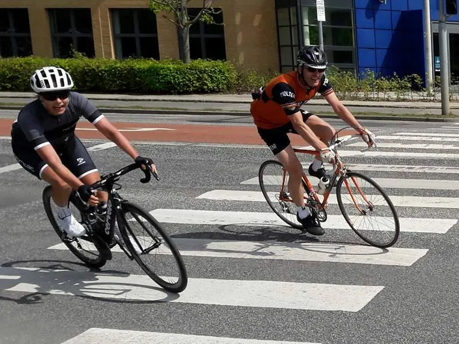
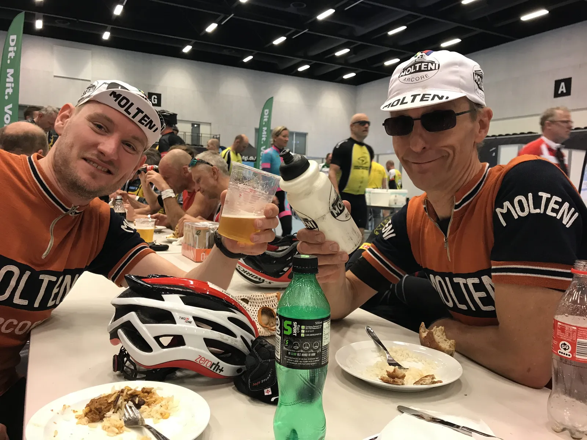

Grejsdalsløbet 2017: Kramper, festben og fadøl

Det var sol og sommer ved 2017-udgaven af Grejsdalsløbet. Squadra Moltenis Eigil Leegaard kørte sig i top-100 på 140 km-distancen (og en flot 16. plads i H50) og Kasper Sørensen i top-50 på 85 km-distancen (16. plads i H30).
Squadra Molteni havde 3 ryttere til start. Kasper Sørensen, Niels Bjørnsteen og Eigil Leegaard. Kasper kørte 85-km. distancen, mens Niels og Eigil tog 140 km distancen.
Kasper krampede og kæmpede
Kasper havde et godt løb. Kørte klogt og økonomiserede med kræfterne – og fik klemt sig ind i top-50. Det vurderes at han tabte cirka 8,5 minut, da han hjalp en nødstedt kvinde på Højen Skovvej.
– Hendes gear sad fast, og efter vi fik det på plads, tilbød jeg selvfølgelig at skubbe hende de sidste 500 meter til toppen. Jeg er sikker på, at det var pga. den anstrengelse, at jeg senere fik kramper på Egtved Holt-bakken, fortæller Kasper.
140 km. med festben og 40 km./t.
Niels og Eigil kom i et tordnende hurtigt 140 km-felt, der konstant lå på den smertende side af 40 km/t.

De første 50 km. var de med til at skabe løbet. Munkebjerg splittede feltet, men Niels og Eigil fik kørt sig op til feltet igen. Kiddesvej var en mavepumper på hele feltet.
Niels, der både havde festben og en 6-krans, der skreg defekt, valgte at trille hjem i privaten. Eigil fortsatte, kæmpede hårdt og kunne, godt brugt, rulle over målstregen i den yderst godkendte til 4:08:06 (33.9 km/t).
Eigil var efterfølgende helt udtømt, og indfandt sig hurtigt i Café-området i Spektrum, hvor der var fadøl og chili con carne til alle ryttere.
